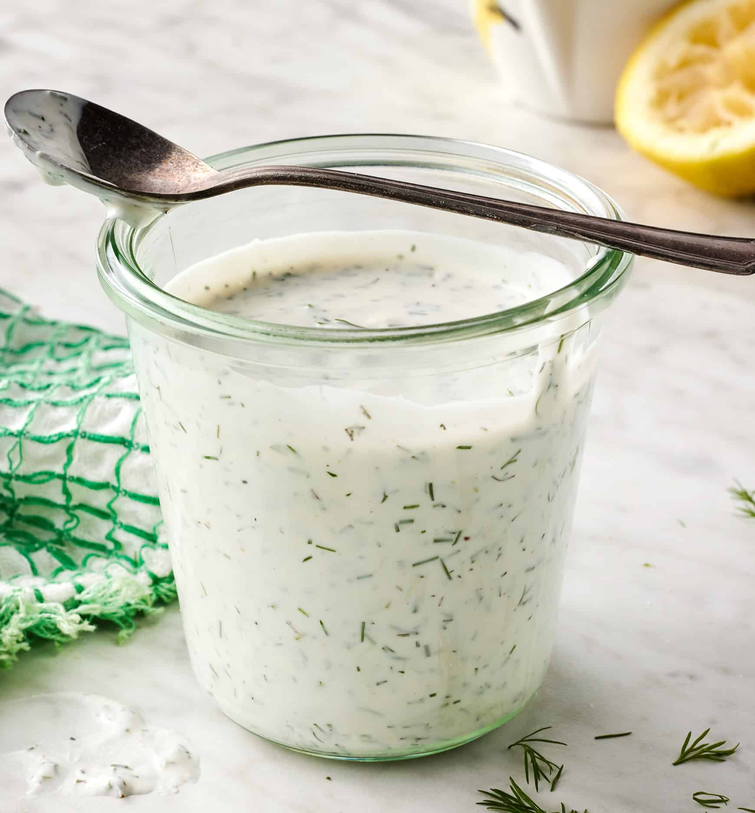

Aderezo ranch
Atrás

Ingredientes
- Yogurt griego
- Mayonesa
- Eneldo (fresco o deshidratado)
- Ajo en polvo
- Cebolla en polvo
- Sal
- Pimienta
- Jugo de limón o vinagre
Pasos
- En un tazón, mezcla 1/2 taza de yogurt griego con 1/4 taza de mayonesa.
- Agrega 1 cucharadita de eneldo, 1/2 cucharadita de ajo en polvo y 1/2 cucharadita de cebolla en polvo.
- Agrega sal y pimienta al gusto.
- Agrega 1 cucharadita de jugo de limón o vinagre y mezcla bien.
- Refrigera durante al menos 30 minutos antes de servir para que los sabores se mezclen.